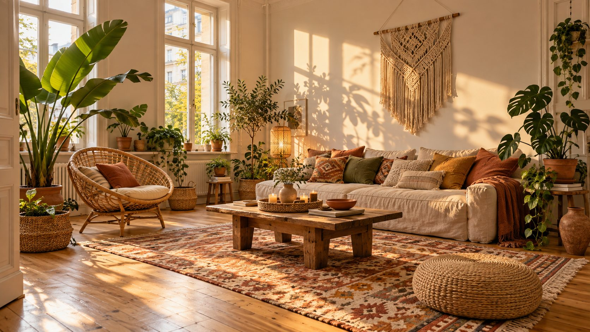

Boho einrichten
Lässig, warm und gesammelt. So bringst du Rattan, Muster und Pflanzen zusammen, ohne dass es nach Chaos aussieht.
Boho kommt von Bohème: natürliche Materialien, viele Stoffe und Fundstücke mit Geschichte. Damit es nicht chaotisch wirkt, helfen eine ruhige Basis und höchstens drei bis vier Farben pro Raum.
Was Boho ausmacht.
Natürliche Materialien, viele Stoffe und Dinge mit Geschichte. Dazu ein freier Umgang mit Regeln.
- Herkunft
- Boho ist kurz für Bohème. Der Begriff stammt aus dem 19. Jahrhundert und aus Paris. Er stand für Künstler, Dichter und Denker, die bewusst anders lebten als das Bürgertum.
- Hippie-Zeit
- In den 1960er Jahren lebte der Look mit der Hippie-Bewegung neu auf. Stil-Ikonen wie Talitha Getty und Janis Joplin prägten ihn.
- Materialien
- Holz, Rattan, Bast, Leder, Leinen, Baumwolle und Wolle. Dazu Kelims mit Fransen, Makramee und Fundstücke vom Flohmarkt.
- Farben
- Gedeckte Erdtöne als Basis, Farbtupfer in kräftigen Tönen für Leben im Raum.Sand#E2CBA7Rattan#C29A5BTerrakotta#A8552FOlive#6F6F3D
- Möbel
- Große Stücke bleiben schlicht und praktisch. Den Look machen Stoffe, Deko und Pflanzen. Gemischte Stühle am Esstisch sind ausdrücklich erlaubt.
Mehr kräftige Farben in einem Raum werden schnell unruhig. Mit einer ruhigen Grundfarbe darf es bei Kissen und Teppichen bunter werden.
So richtest du ein.
Sechs Schritte. Erst kommt eine ruhige Basis, dann die Schichten, die Boho ausmachen.
Eine ruhige Basis wählen
Weiß, Sand oder ein sanfter Erdton an den Wänden. Je bunter die Stoffe werden, desto ruhiger darf die Wand sein. Wie viel Farbe du brauchst, sagt der Farb-Rechner.
Schlichte, natürliche Möbel
Ein bequemes Sofa, ein Sessel aus Rattan, ein Tisch aus Holz. Wuchtige Schrankwände und pompöse Möbel passen nicht.
Teppiche in Schichten
Ein großer Teppich aus Jute als Grund, darauf ein kleinerer Kelim mit Muster. Welche Größe der untere braucht, sagt der Teppich-Rechner.
Stoffe großzügig verteilen
Kissen mit Quasten, Decken, ein Pouf, Makramee an der Wand. Niedrige Sitzplätze wie Bodenkissen passen gut.
Viele kleine Lichter
Mehrere Leuchten in verschiedenen Höhen statt einer Deckenlampe: Rattanleuchte, Laterne, Lichterkette. Das Licht bleibt warm.
Pflanzen und Lieblingsstücke
Große Pflanzen am Boden, Hängepflanzen am Fenster, im Schatten etwa eine Monstera. Dazu Dinge, die eine Geschichte erzählen, vom Flohmarkt oder aus dem Urlaub. Mehr zu Fundstücken unter Vintage einrichten.
Typische Fehler.
Zu voll
Boho darf üppig sein, aber nicht vollgestellt. Lass Lieblingsstücken freie Fläche, sonst sieht man sie nicht mehr.
Zu viele Farben
Drei bis vier kräftige Farben pro Raum reichen. Den Rest übernehmen Erdtöne und Naturmaterialien.
Zu viele Stile
Mehr als drei Stile in einem Raum wirken schnell unruhig. Boho passt gut zu Skandinavisch oder Vintage, aber nicht zu allem gleichzeitig.
Schlafzimmer wie Wohnzimmer
Im Schlafzimmer lieber ruhiger werden: weniger Muster, gedeckte Farben, dafür viele Kissen auf dem Bett.
Für den Boho-Look.
Rattan, Teppiche, Stoffe und Licht. Die Links führen zu einer Suche bei AmazonAnzeige
Möbel und Teppiche
Stoffe und Wand
Licht und Pflanzen
Häufige Fragen.
Geht Boho auch in einer kleinen Wohnung?
Ja, wenn du sparsam bleibst. Helle Wände, wenige große Möbel und die Muster vor allem auf Kissen und Teppich. Hängepflanzen sparen Stellfläche.
Geht Boho auch dunkel?
Ja. Dunkle, warme Wände wirken gemütlich. Ein paar helle, kräftige Akzente wie eine Vase oder ein besticktes Kissen halten den Raum lebendig.
Was ist der Unterschied zu Vintage?
Vintage sammelt Möbel aus bestimmten Jahrzehnten. Boho lebt mehr von Stoffen, Naturmaterialien, Pflanzen und Dingen aus aller Welt. Beides passt gut zusammen.
Geht Boho zur Miete?
Sehr gut, denn der Stil lebt von Teppichen, Stoffen, Leuchten und Pflanzen. Was du an den Wänden darfst, steht unter Schöner wohnen zur Miete.
Quellen.
Alle 3 Quellen anzeigen
- sanier.de: Wie funktioniert der Boho-Style in Haus und Wohnung? (aktualisiert 25.07.2025) sanier.de
- wohnglück: Schlafzimmer im Boho-Stil wohnglueck.de
- Blick: Einrichten im Boho-Stil (17.04.2019) blick.ch
Geprüft am 28.10.2026.